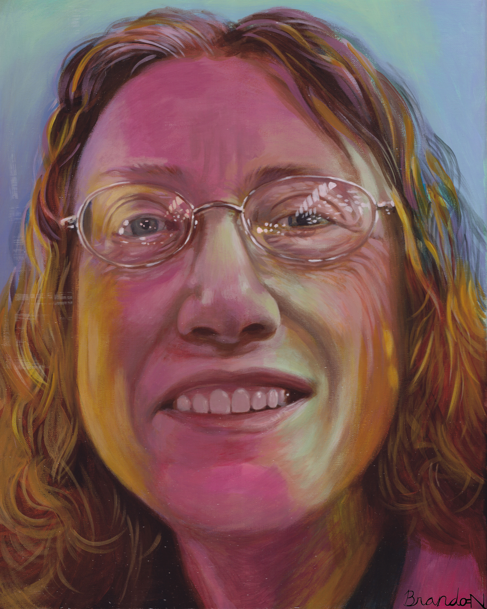
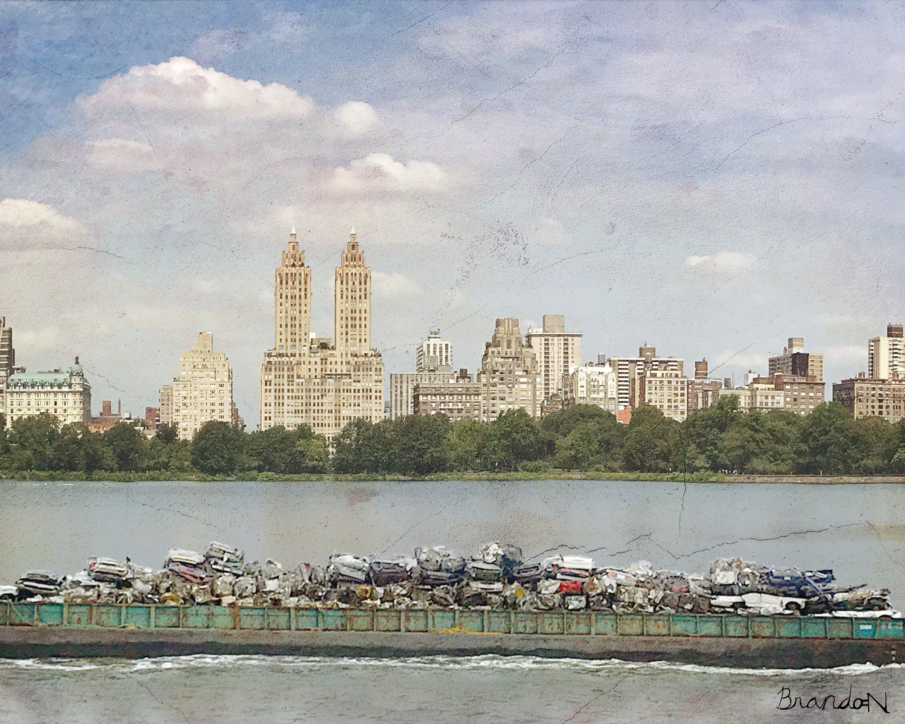

Welcome
My favorites
- Cafe Music ll: Rubato
- Devil’s Trill
- Laulu Kansan Tapaan Op.39a No.3 Sarjasta ‘talkootanssit’
- Bach - Aria mit 30 Veränderungen Goldberg Variations BWV 988
- Concerto for 2 Cellos in G minor, RV 531
- Antiche Danze Ed Arie Per Liuto, Suite No.3, P.172
- Lyadov Prelude Op. 11 No. 1
- Sinfonia Concertante in E flat K297b/KAnh9/C14.01
- Violin Sonata No.3 in C major, BWV 1005
- Keyboard Sonata in F minor, K.466/L.118/P.501
- Les Soirees de Pausilippe, Hommage a Rossini: 25 Pensees Musicales, Op.75 (XVlll. Marcia in D minor)
- Rondo à la Krakowiak in F major, Op. 14
- Rossini: Introduction, Theme and Variations for Clarinet and Orchestra in E flat major
- François Couperin : Les barricades mystérieuses
- Die Walkure (Arr. L. Stokowski; Magic Fire Music)
My Amazing and Astonishing Artworks

Frog
This is a frog.
.jpg)
A Tribute to Alzheimer's Patients
This is a tribute.

Beautiful Smile
This painting is dedicated to my English tutor, Ms. Higbee!

Contrast
A fine day in New York City.

D4G
This is my doodle for Google's 2018 D4G art contest.

A Breezy Afternoon
A Breezy Afternoon in the backyard.

j02-1
An intense hide and seek.

Salvation
Charlotte on Antelope Canyon.

UDS
In the near future...